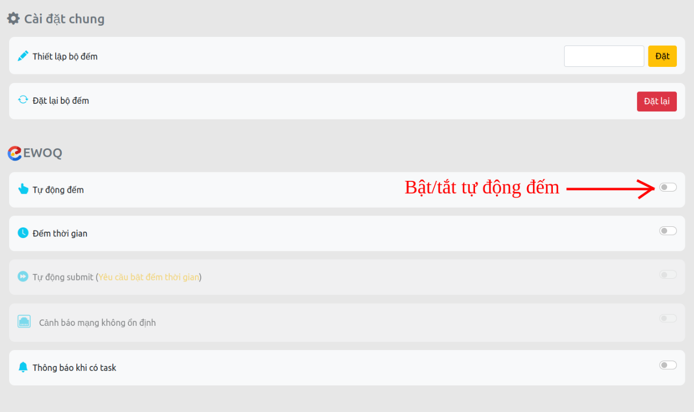

Có gì ở v2.0?
(Click để xem chi tiết)
-
(Mới) Đếm thời gian
-
Tùy chỉnh vị trí hiển thị thời gian
-
-
(Mới) Tự động submit
-
Tùy chỉnh thời gian và thông báo submit
-
-
(Mới) Thông báo khi có task
-
Tùy chỉnh thông báo biểu ngữ
-
Thêm và tùy chỉnh âm thanh thông báo
-
-
Sửa lỗi tự động đếm và một vài lỗi khác
Hướng dẫn sử dụng chung
EWOQ
(Click để xem chi tiết)
- 1. Chế độ tự động đếm
- 2. Chế độ đếm thời gian
- 3. Chế độ tự động submit
- 4. Chế độ thông báo khi có task
Chi tiết:
-
1. Chế độ tự động đếm

-
2. Chế độ đếm thời gian

- Tùy chỉnh vị trí bộ đếm thời gian:

-
3. Chế độ tự động submit (Cần bật chế độ đếm thời gian)

- Tùy chỉnh thời gian tự động submit:
-
4. Thông báo khi có task

4.1. Tùy chỉnh tiêu đề, nội dung thông báo:

4.2. Sử dụng thông báo âm thanh:

4.2.1. Sử dụng chuông có sẵn:

4.2.2. Sử dụng chuông tùy chọn:
 4.3. Cách thêm chuông tùy chọn:
4.3. Cách thêm chuông tùy chọn:Chú ý: Do vẫn đề về bảo mật và quyền riêng tư của google, cách thêm âm thanh tùy chọn chỉ có thể sử dụng được khi bạn sử dụng cách cài bằng Chế độ dành cho nhà phát triển (Developer mode) thông qua thư mục nguồn của extension.
4.3.1. Bước 1: Chuẩn bị
- File âm thanh
Lưu ý: đặt tên file âm thanh viết liền không dấu, không có kí tự đặc biệt (Chỉ hỗ trợ các định dạng âm thanh: mp3)
Ví dụ: nhac-chuong.mp34.3.2. Bước 2: Copy file âm thanh đã chuẩn bị vào thư mục customs trong thư mục extension đã tải về và giải nén theo đường dẫn:
<Thư mục extension đã tải về và giải nén>/sources/res/sounds/customs/

4.3.3. Bước 3: Reload lại extension
Vào lại trang quản lý extensions của chrom và ấn reload lại.
More tools->Extensions hoặc Công cụ khác-> Tiện ích mở rộng4.3.4. Bước 4: Thêm tên file trong trang Cài đặt
- Điền tên file vừa copy vào thư mục customs và nhấn thêm

4.3.5. XONG , giờ file đã được cập nhật trong danh sách ở trên
hãy chọn để dùng nó!